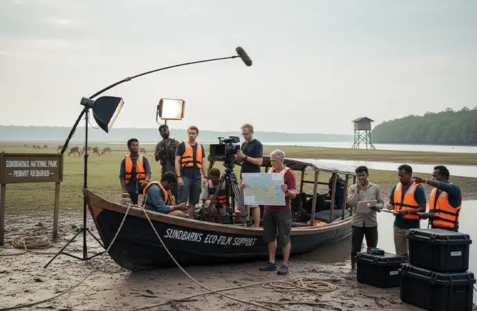
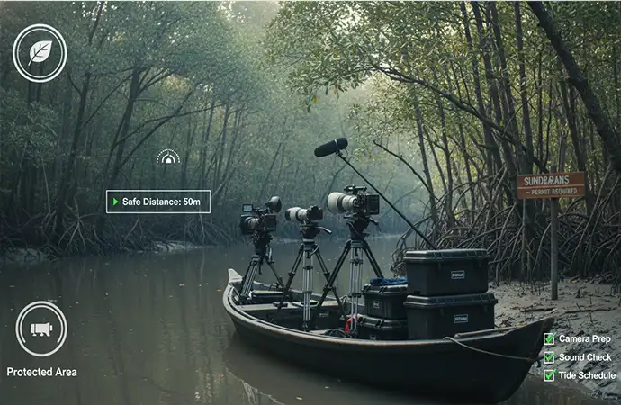
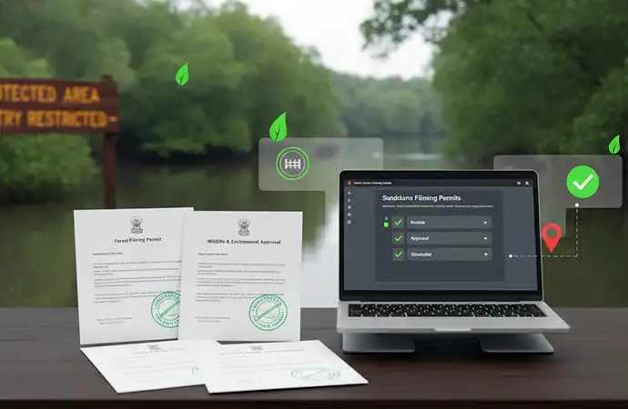
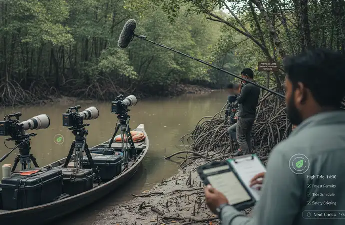

Fantastic team. They took ownership of the project. As a result, they gave very good creative inputs to improve the ad. They also tried hard to reduce the project cost... Read Ehtesham Ahmed's Full ReviewRead More
Film Fixer in Sundarbans for Wildlife and Forest Productions

Libanza Films provides professional film fixer services in the Sundarbans for international wildlife filmmakers, conservation documentaries, environmental organisations, NGOs, broadcasters and foreign production houses. Film fixer support starts from USD 2,000. Forest Department filming permits take 4 to 6 weeks — significantly longer than a standard Ministry of Information permit. Armed forest guards are mandatory for all filming crews inside the Reserve Forest and are coordinated by Libanza Films as part of the permit process.
The Sundarbans is the world's largest mangrove forest and a UNESCO World Heritage Site. Home to the Royal Bengal Tiger, saltwater crocodiles, Irrawaddy dolphins, spotted deer and rare bird species, it is one of the most critical locations in the world for wildlife, conservation and climate documentary production. Filming here is highly regulated and logistically complex — Forest Department permits, armed guards, boat-only access, tidal navigation, weather dependency and wildlife safety protocols make a professional local film fixer essential for every foreign crew.

Led on the Ground by Azizul Hoque Shiplu, Founder and Film Director
Sundarbans productions Libanza Films supports are overseen by Azizul Hoque Shiplu, Founder and Film Director, with over two decades in advertising and film production and direct personal oversight of more than 100 advertising and audiovisual projects across Bangladesh, including high-risk remote and wildlife environments. He began his career at Ogilvy and Mather and holds a diploma in filmmaking from the Zahir Raihan Film Institute. Read Azizul's full profile
Why the Sundarbans Is Critical for International Wildlife Filming

World's Largest Mangrove Forest
The Sundarbans spans thousands of square kilometres across tidal rivers, mangroves and islands shared between Bangladesh and India. The Bangladesh Sundarbans alone covers approximately 6,017 square kilometres. Its scale and biodiversity make it globally significant for wildlife, conservation and climate documentary production.
Unique Wildlife and Conservation Stories
The Sundarbans is internationally known for the Royal Bengal Tiger, saltwater crocodiles, Irrawaddy dolphins, spotted deer and over 300 bird species. It is central to narratives on climate change, human-wildlife conflict, forest community livelihoods and coastal resilience — all subjects in consistent demand from international broadcasters and conservation organisations.
High-Sensitivity Ecological Zone
As a UNESCO World Heritage Site and protected forest reserve, the Sundarbans requires strict compliance with Forest Department regulations, wildlife safety protocols and environmental guidelines. Independent foreign filming is not permitted under any circumstances — all access requires advance permits and armed escort.
Why You Need a Film Fixer in the Sundarbans

The Sundarbans is not accessible for independent foreign filming under any circumstances. Entry, filming, movement and overnight stays all require permissions from the Bangladesh Forest Department — a separate authority from the Ministry of Information — which foreign nationals cannot apply to independently.
Libanza Films acts as your official liaison with forest authorities, coordinates armed forest guards, manages boat logistics and navigation, and ensures all safety and compliance requirements are met throughout every day of the shoot.
Sundarbans Permit and Access Timelines at a Glance
Ministry of Information filming permit
10 to 21 working days
Applied for in parallel with Forest Dept permit
Forest Department filming permit
4 to 6 weeks
Includes wildlife safety review — the primary constraint
Armed forest guard coordination
Arranged alongside Forest Dept permit
No additional lead time — mandatory for all crews
CAAB drone permit (if aerial footage required)
3 to 4 weeks after MoI permit + Forest Dept clearance
Wildlife sanctuary core zones permanently prohibited
Journalist visa pre-clearance
2 to 4 weeks
Libanza Films issues invitation letters
Recommended total lead time
6 to 8 weeks minimum
8 to 10 weeks for productions including drone footage
Timelines based on productions Libanza Films has directly supported in the Sundarbans. We confirm a specific schedule once your production brief is received. | Full filming permits guide | Drone filming permits guide
Who Needs a Film Fixer in the Sundarbans?
- International wildlife documentary filmmakers
- Environmental and conservation organisations
- NGOs, INGOs and climate research teams
- International broadcasters and streaming platforms
- Academic and research film crews
- Foreign production houses filming forest ecosystems
If your production involves wildlife, protected forest access or overnight stays in the Sundarbans, professional fixer support is not optional — it is the legal requirement for any foreign crew to be present inside the reserve.
What a Film Fixer Does in the Sundarbans

- Forest Department filming permit application and management
- Ministry of Information filming permit (applied concurrently)
- Armed forest guard coordination — mandatory for all crews
- CAAB drone permit and Forest Department drone clearance
- Boat, launch and tidal river logistics planning
- Wildlife safety and risk assessment for each filming zone
- Base-camp planning and overnight accommodation coordination
- Weather and tide-based shoot scheduling
- Media, journalist and filming visa guidance and invitation letters
- Emergency evacuation planning and communication protocols
- On-site supervision and real-time problem solving every shoot day
Filming Challenges in the Sundarbans
- Restricted forest entry, movement zones and no-go areas within the reserve
- Royal Bengal Tiger and saltwater crocodile presence requiring armed guard protocols at all times
- Boat-only access — all equipment must be waterproofed and transported by vessel
- Tide-dependent navigation — shoot windows planned around tide tables
- Limited communication — no mobile signal in most of the interior forest
- Weather volatility and cyclonic conditions from May to October
- Strict environmental compliance — no plastic, no waste, no disturbance to wildlife in core zones
- Drone restrictions — core wildlife zones permanently prohibited for aerial
Libanza Films plans conservatively around all these variables and prioritises crew safety while maintaining production efficiency.
How Much Does a Film Fixer Cost in the Sundarbans?
Film fixer costs in the Sundarbans vary by engagement type, duration, crew size and the extent of boat and base-camp logistics required. Based on typical international productions Libanza Films has supported here:
- Fixer-only support: USD 2,000 to 8,000 — your crew, your direction. We handle all permits including Forest Department clearance, armed guard coordination and on-ground logistics throughout the shoot.
- Hybrid support: USD 5,000 to 15,000 — you bring your director and specialist wildlife crew. We supply local camera operator, sound recordist and production assistant alongside full fixer coordination.
- Full line production: USD 8,000 to 25,000+ — we execute the entire Sundarbans shoot on your brief, from Forest Department permits through filming and delivery.
Boat hire, base-camp accommodation and armed guard fees are priced separately and confirmed once production dates, crew size and overnight requirements are received. All costs are itemised with no hidden markups.
How much does a film fixer cost in Bangladesh? Full cost guide
Film Fixer Services Included in the Sundarbans
- Forest Department filming permit and legal clearance
- Ministry of Information filming permit (concurrent application)
- CAAB drone permit and Forest Department drone clearance
- Wildlife safety and armed forest guard coordination
- Boat hire, fuel and tidal river logistics
- Local wildlife guides, fixers and translators
- Base-camp planning and overnight accommodation
- Emergency evacuation planning and communication
- Environmental compliance monitoring throughout the shoot
- On-ground supervision every shoot day
These services integrate seamlessly with our Film Fixer in Bangladesh national service and our Filming Permits and Visa Guidance service.
Why International Wildlife Crews Choose Libanza Films
- Experience supporting sensitive wildlife and conservation projects in high-risk remote environments
- Established relationships with Bangladesh Forest Department and permit authorities
- Safety-first approach: armed guards, wildlife risk assessment, emergency evacuation planning built into every Sundarbans production
- English-speaking production managers who communicate at international pace
- Transparent documentation and environmental compliance workflows
- Nationwide capability — Sundarbans shoots can extend to Cox's Bazar, Dhaka, Sylhet or Chittagong under the same production support
Film Fixer Sundarbans — Frequently Asked Questions
A Forest Department filming permit takes 4 to 6 weeks — significantly longer than a standard Ministry of Information permit (10 to 21 working days). Both permits must be applied for concurrently. Armed forest guard coordination is arranged alongside the Forest Department permit and does not add separate lead time. Recommended total planning lead time for a Sundarbans production is 6 to 8 weeks minimum.
Fixer-only support starts from USD 2,000 to 8,000 covering all permits, armed guard coordination and on-ground logistics. Hybrid support with local crew runs USD 5,000 to 15,000. Full line production starts from USD 8,000 to 25,000 and above. Boat hire, base-camp accommodation and armed guard fees are priced separately. Libanza Films provides itemised estimates within 48 hours of receiving your production brief.
Yes. Bangladesh Forest Department regulations require armed forest guards to accompany all film crews inside the Sundarbans Reserve Forest. Guards are mandatory for wildlife safety — the Royal Bengal Tiger and saltwater crocodiles are present throughout the filming areas. Libanza Films coordinates the required guards as part of the overall permit process.
Yes. The Sundarbans is not accessible for independent foreign filming. Forest Department permits cannot be obtained independently by foreign nationals. Boat logistics, armed guard allocation and on-site compliance are managed exclusively through permitted local operators. Fixer-only support starts from USD 2,000.
Yes, with proper planning. Libanza Films coordinates armed forest guards, conducts wildlife risk assessments for each filming zone, plans boat routes around tide schedules, and monitors weather and cyclone alerts throughout the shoot. Emergency evacuation planning is included for all multi-day Sundarbans productions.
Professional camera, lighting and sound equipment can be used but must be transported by boat and waterproofed at all times. Drone filming requires separate CAAB approval plus Forest Department drone clearance, adding 3 to 4 weeks to permit lead times. Wildlife sanctuary core zones prohibit drone flights. Generator-powered equipment requires advance Forest Department coordination.
Drone filming requires CAAB approval (3 to 4 weeks after the MoI permit) plus separate Forest Department clearance. Wildlife sanctuary core zones are permanently prohibited for drone flights to protect tiger and wildlife populations. Buffer zone and tourism zone aerial footage may be permissible with combined CAAB and Forest Department clearance. Libanza Films manages both permit applications. See the complete drone filming permits guide.
October to March is the recommended filming season: cooler temperatures, calmer tides and more reliable wildlife sightings as animals move to water sources in dry conditions. The monsoon from June to September brings dramatic forest visuals but higher cyclone risk, stronger tides and significantly more complex logistics. Avoid April to May for heat and pre-monsoon cyclone risk.
Minimum 6 to 8 weeks from brief to shoot date. The Forest Department permit alone takes 4 to 6 weeks. The Ministry of Information filming permit (10 to 21 working days) runs in parallel. Boat logistics and armed guard allocation are confirmed once permits are approved. Productions adding drone footage need 8 to 10 weeks total. Contact Libanza Films as early as possible once shoot dates are confirmed.
Talk to a Film Fixer in the Sundarbans
Planning a wildlife documentary, conservation film or environmental project in the Sundarbans? Share your production brief, planned dates, crew size and whether you need drone footage. Libanza Films returns a full permit timeline and itemised cost estimate within 48 hours.
Related Guides and Services
- How to Hire a Film Fixer in Bangladesh: The Complete Guide (2026)
- Filming Permits in Bangladesh: Step-by-Step Guide for Foreign Crews
- Drone Filming Permits in Bangladesh: Complete Guide (2026)
- How Much Does It Cost to Film in Bangladesh? (2026 Guide)
- How Much Does a Film Fixer Cost in Bangladesh?
- Safety, Security and Risk Management for Filming in Bangladesh
- Film Fixer vs Production Company: What International Crews Actually Need
- NGO and Documentary Filming in Bangladesh: What Foreign Teams Should Know
- Filming in Bangladesh from the UK and USA: Guide for Diaspora Filmmakers (2026)
- International Shoot in Bangladesh: 2026 Filming Guide
- Film Fixer in Bangladesh — Full National Coverage and Pricing
- Filming Permits and Visa Guidance Bangladesh
- Documentary Production in Bangladesh
- Documentary Portfolio — Libanza Films
Film Fixer Coverage Across Bangladesh
The Sundarbans is one of five major filming regions Libanza Films covers nationally. All multi-location productions are coordinated under a single plan:
- Film Fixer in Dhaka — permits, Old Dhaka and Sadarghat access, broadcast news and commercial productions
- Film Fixer in Cox's Bazar — RRRC Rohingya camp permits, coastal and marine filming, NGO humanitarian productions
- Film Fixer in Chittagong — ship-breaking yards, Chittagong Port, CHT gateway, industrial and heritage filming
- Film Fixer in Sylhet — tea garden estates, Ratargul Swamp Forest, haor wetlands, rural community documentary
- Film Fixer in Bangladesh — full national coverage, all pricing tiers, complete international client list
Customer Reviews

Very dedicated team! Apprecite their enthusiasm, creativity and passion for their work... Read Md. Jamil Hossain Chowdhury Rahat's Full ReviewRead More

Libanza specializes in creating captivating films and advertisements with compelling narratives and stunning visuals... Read Riad Full ReviewRead More
Get in Touch
Our Clients
Diverse industries, trusted partnerships. From advertising agencies to corporate entities and non-profit organizations, our clients rely on us to bring their creative visions to life. With passion, expertise, and attention to detail, we deliver exceptional video production solutions that exceed expectations. Join our esteemed clientele and experience the power of captivating storytelling with Libanza Films.